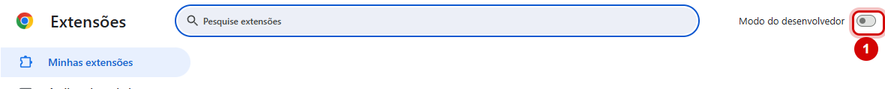
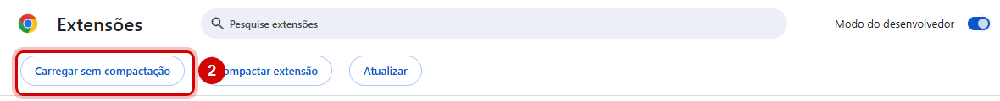
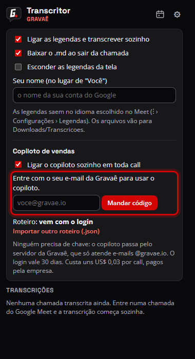
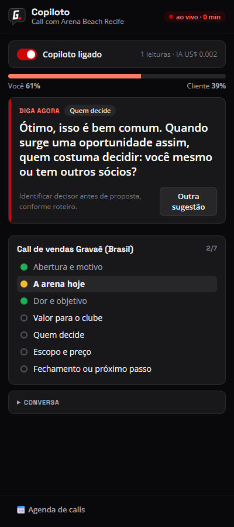

Instalar o Transcritor e o copiloto
A extensão transcreve as calls do Google Meet com o nome de cada pessoa e, com o copiloto, sugere o que falar durante a call de venda e escreve o resumo no fim. Leva uns 3 minutos para instalar, e é só uma vez.
-
Baixe e descompacte numa pasta fixa
Clique em Baixar a extensão, aqui em cima. Vem o arquivo
transcritor-gravae.zip.- Windows: abra a pasta Downloads, clique com o botão direito no arquivo › Extrair tudo… › Procurar… › escolha Documentos › Extrair. Fica a pasta
Documentos\transcritor-gravae. - Mac: dê dois cliques no arquivo e arraste a pasta
transcritor-gravaepara Documentos.
Não apague nem mova essa pasta depois. O Chrome usa ela o tempo todo; se ela sumir, a extensão para de funcionar.
- Windows: abra a pasta Downloads, clique com o botão direito no arquivo › Extrair tudo… › Procurar… › escolha Documentos › Extrair. Fica a pasta
-
Abra a página de extensões do Chrome
Copie o endereço abaixo, cole na barra de endereço do Chrome e aperte Enter. (O Chrome não deixa abrir essa página por link.)
chrome://extensions -
Ligue o “Modo do desenvolvedor”
É a chave no canto de cima, à direita.

-
Clique em “Carregar sem compactação” e escolha a pasta
Aparece uma linha de botões. Clique em Carregar sem compactação, entre em Documentos, clique uma vez na pasta
transcritor-gravaee em Selecionar pasta.
Pronto: aparece o cartão Transcritor de Chamadas, com o ícone G. da Gravaê.
-
Fixe o ícone na barra do Chrome
Clique no ícone de quebra-cabeça 🧩, no canto de cima à direita do Chrome, e no alfinete 📌 ao lado de Transcritor de Chamadas. O G. fica sempre à vista.
-
Entre com o seu e-mail da Gravaê
Clique no G. › na engrenagem ⚙ › em Copiloto de vendas, digite o seu e-mail
@gravae.ioe clique em Mandar código. Chega um e-mail com um código de 6 dígitos: digite e clique em Entrar.
O login fica guardado e se renova sozinho. -
Use numa call
Entre numa call do Google Meet. As legendas ligam sozinhas e aparece Transcrevendo no canto da tela. Para o copiloto: clique no G. › Abrir o copiloto. O painel abre ao lado do Meet, e o cliente não vê, nem quando você compartilha a tela.

Exemplo do painel numa call de venda. As calls ficam na agenda: G. › ícone de calendário 📅.
Avise quem está na call que ela está sendo transcrita.
Como atualizar
Quando sair uma versão nova, a extensão avisa. Para atualizar, sem perder o login nem o histórico:
Baixe de novo
Clique em Baixar a extensão, aqui no topo.
Descompacte por cima da mesma pasta
Extraia em Documentos, como na instalação. Quando perguntar, escolha Substituir os arquivos.
Recarregue
Em
chrome://extensions, clique na setinha circular ↻ do Transcritor de Chamadas.
Nunca remova a extensão para instalar de novo: remover apaga o login e o histórico das calls.
Se der problema
- Ao abrir o Chrome, aparece “Desativar extensões no modo do desenvolvedor”
- É um aviso normal para extensões instaladas assim. Feche o aviso no X; não clique em “Desativar”.
- Deu erro “Manifesto ausente” ao carregar
- Você escolheu a pasta errada. Escolha a pasta
transcritor-gravae, a que tem o arquivomanifest.jsondentro. - As legendas saem em inglês
- No Meet: ⋮ › Configurações › Legendas › Português.
- O código não chegou
- Olhe o spam e confira se usou o e-mail
@gravae.io. Dá para pedir outro depois de alguns minutos. - A transcrição parou ou saiu incompleta
- Durante a call, clique no G. › Diagnóstico e mande o que for copiado para o João.